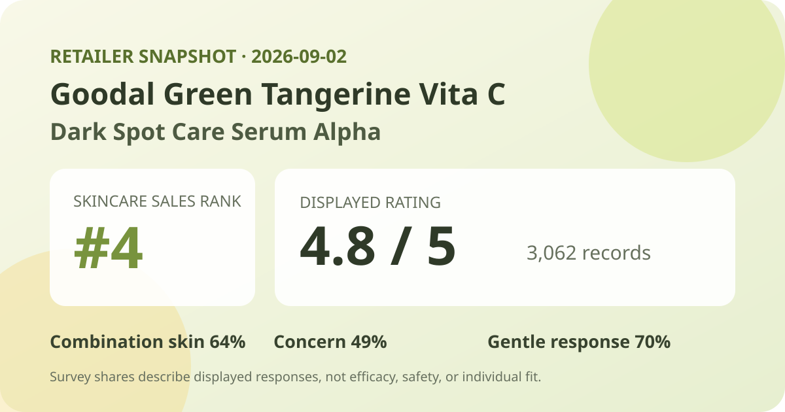
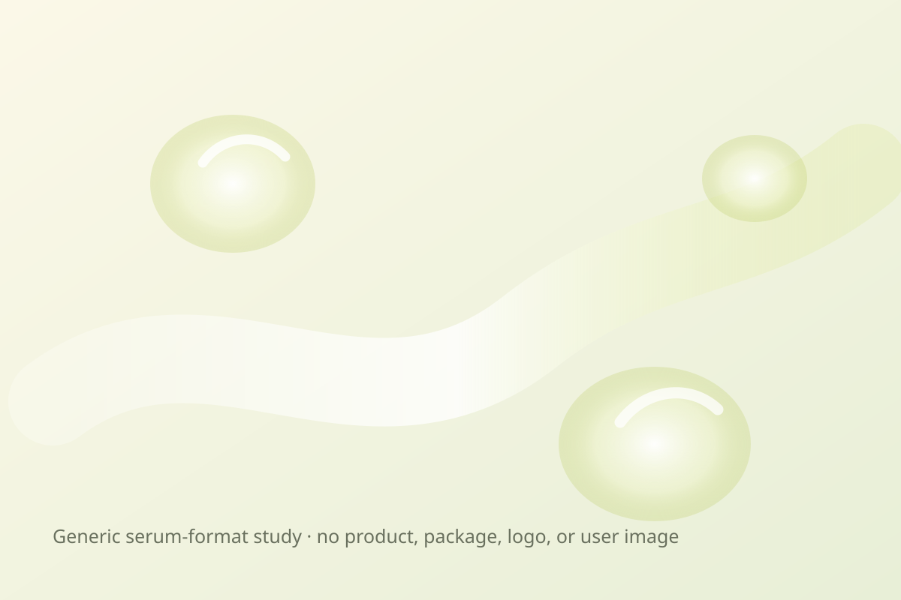

Data captured September 2, 2026. This article uses only the retailer's displayed product title, skincare sales rank, aggregate rating, review count, survey shares, and dated pack and price display. No individual review, reviewer name, product photograph, or user photograph is reproduced or translated. I did not test the product.

The short version: the promotional Goodal Green Tangerine Vita C Dark Spot Care Serum Alpha listing ranked fourth in the captured Olive Young Korea skincare sales list and displayed 4.8 out of 5 from 3,062 review records. Its survey panel showed combination skin 64%, wrinkle and brightening concern 49%, and a gentle response at 70%. These are storefront feedback signals, not proof that the serum fades spots, brightens skin, changes wrinkles, or suits every user.
The narrow conclusion is favorable: within this retailer's rating system, 3,062 linked records produced a one-decimal display of 4.8 on capture day. That is enough volume to describe the direction of sentiment inside this listing. It does not reveal what every reviewer expected, how consistently the product was used, or whether every linked record concerns the exact 50 ml plus 50 ml promotional bundle now shown.
The page did not expose a trustworthy five-, four-, three-, two-, and one-star breakdown. Several different distributions can round to the same 4.8 average, and the one-decimal display hides additional precision. I therefore do not invent a five-star share or reverse-engineer missing buckets. The value is also a dated snapshot; later reviews can move the count and average.
Review volume limits the influence of any single score, but it does not eliminate selection effects. The pool comes from shoppers linked to one retailer who chose to leave feedback. Scores may reflect value, delivery, packaging, incentives, expectations, option changes, or product experience. A large commerce sample is still not a controlled trial or a representative survey of everyone who might use a serum.
This was the leading displayed skin-type response. It describes representation, not a combination-skin performance score.
This identifies the leading concern response. It is not a measurement of spot, tone, or wrinkle change.
This is a subjective aggregate response, not an irritation test, safety assessment, or guarantee for reactive skin.
The three percentages answer separate questions, so they should not be added or averaged. The retailer did not display a distinct denominator for each survey. There is no basis for assuming all 3,062 linked records answered every prompt, or that the leading percentage shows the full distribution of alternatives.
Combination skin at 64% says that group led the captured skin-type poll; it does not prove the serum performs better for combination skin. The 49% concern share describes what respondents selected, not an observed outcome. The 70% gentle response is useful as sentiment context, but personal tolerance can vary with allergies, current skin condition, amount, frequency, and the rest of a routine.

The retailer categorizes the item as a serum, but I did not open, smell, spread, or layer it. Viscosity, slip, absorption time, finish, residue, scent, pilling, and compatibility with sunscreen or makeup remain unknown here. The local illustration communicates only a generic lightweight-serum format and deliberately avoids copying the product images, package design, logo, character artwork, or user photographs.
The product name does not establish how much to use, when to apply it, or what other products it should be paired with. Follow the instructions and ingredient label on the actual market-specific package. Introducing one product at a time may make an unwanted change easier to identify, but that practice cannot guarantee safety or compatibility.
The English working name closely translates the Korean listing. “Vita C,” “Alpha,” and “dark spot care” are parts of the retail product identity and positioning; they are not standardized measures of vitamin concentration, stability, penetration, or outcome. A high rating does not validate those marketing ideas. The review panel did not measure pigment, color uniformity, wrinkle depth, irritation, or another clinical endpoint.
No vitamin C form, percentage, delivery system, or ingredient concentration is inferred from the product name or its placement in retailer copy. Product naming, diagrams, price, popularity, and review surveys cannot substitute for the full current ingredient label or a study report. A similarly named Goodal item in another market may differ in bundle, packaging, label, seller, or formula, so confirm the exact item being considered.
Rank four means this promotional listing had strong current sales momentum inside Olive Young Korea's skincare ranking at one moment on September 2. It does not mean fourth-best serum, fourth-best product for marks, or a stronger formula than everything below it. The captured page showed a one-day special, a refill, character merchandise, a discount, coupons, delivery badges, and thousands of concurrent viewers. Those commerce conditions can influence buying velocity.
Rank and rating measure different things. Rank reflects recent retailer sales activity; rating summarizes feedback linked to the listing. Neither explains why someone purchased, why a score was chosen, or what happened after use. Ranking is useful here for selecting a timely product to audit, not for turning popularity into efficacy evidence.
The captured listing described a 50 ml serum plus a 50 ml refill and character magnet, with a ₩43,000 reference price and a price displayed from ₩25,900. It also showed a unit-price basis from ₩2,590 per 10 ml. These were storefront values on September 2, 2026, not permanent prices or a promise that the same option, gift, or coupon will remain available.
Before comparing value, confirm the selected option, total usable volume, refill container requirements, coupon rules, seller, delivery terms, expiry information, and final checkout total. A large bundle offers value only if it can be used appropriately. Packaging, authorized sellers, return rights, and regional labeling can differ outside Korea.
I did not independently capture and reconcile the complete current ingredient list across markets. This article therefore does not claim the serum is fragrance-free, alcohol-free, essential-oil-free, hypoallergenic, non-comedogenic, pregnancy-compatible, or appropriate for acne, eczema, rosacea, allergy, broken skin, or another medical concern. Read the exact package for the item received.
A 70% gentle response cannot rule out stinging, dryness, congestion, allergy, or another unwanted experience. When a known allergy, prescription, skin condition, pregnancy, or previous serious reaction makes the decision higher stakes, qualified medical guidance is more appropriate than a retail average. Stop using a product and seek appropriate advice if a concerning reaction develops.
Not necessarily. The page did not expose a reliable star-by-star distribution, and multiple distributions can round to 4.8.
No. Combination skin led the displayed poll at 64%, which describes respondents in that poll rather than comparative performance or guaranteed fit.
No. That was the leading displayed concern response, not an instrumental measurement, before-and-after result, or controlled comparison.
No. The retailer displayed a 70% gentle response without a separate denominator. It remains subjective and cannot predict individual tolerance.
No. This is a retail-data analysis, and firsthand texture, scent, layering, and wear remain unverified.
The dated aggregate fields were captured from the live Korean product listing. Retail displays can change after capture.
Bottom line: 4.8 from 3,062 records, a number-four sales rank, and the three displayed poll leaders make this a timely, broadly favorable retail listing. The responsible conclusion stops there: the data does not establish ingredient concentration, fading, brightening, wrinkle change, gentleness for an individual, or superiority over another serum.